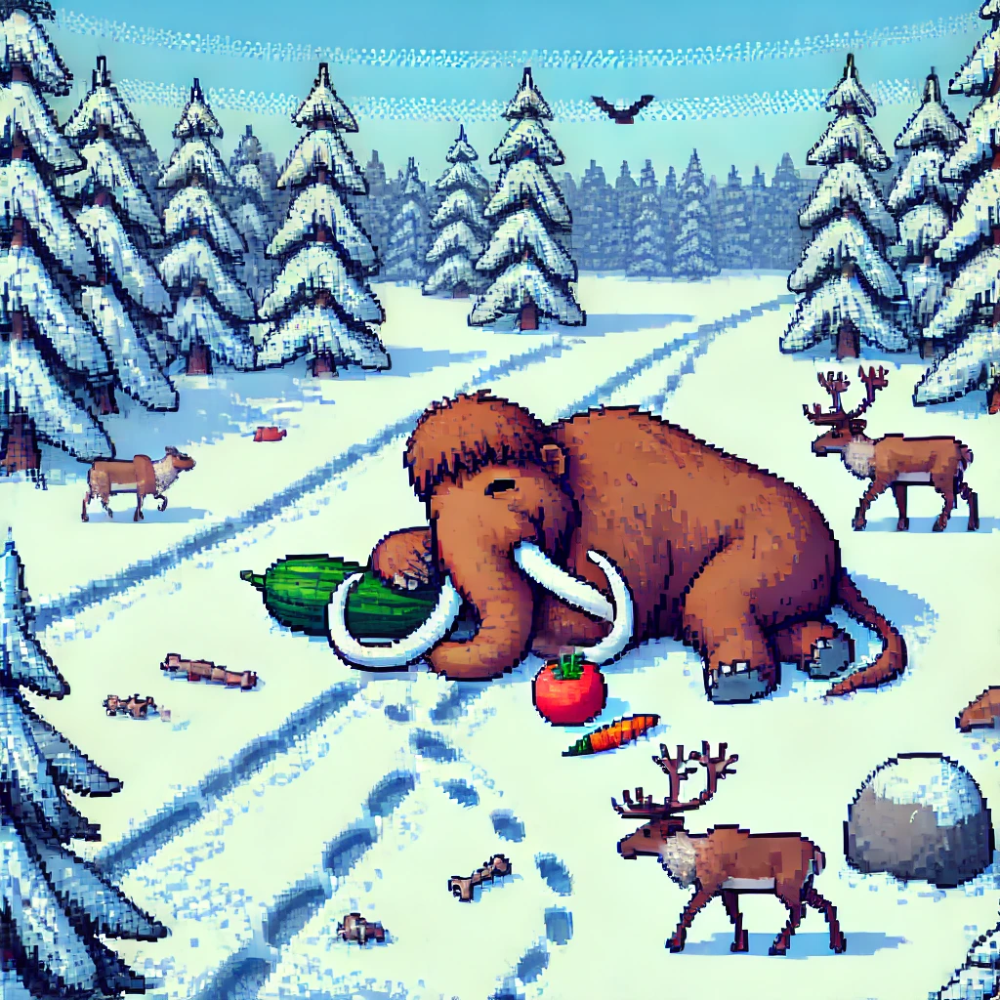

Löysit mammutin
Löysit
mammutin.
Syötit
kurkun
ja
tomaatin
unilääkkeillä.
Mammutti
nukahti.
Tutkitte
maastoa.
Huomaatte,
että
mammutti
on luonut
tärkeitä
polkuja
poroille.
Tallotuista
puista
löytyy
pehmeitä
osia,
joita
linnut
voivat syödä.
Ministeriö
kiinnostuu
tuloksista
ja
luo
työryhmän.
Tutkitaan,
onko
mammutin
palauttaminen
luontoon
hyvä
ekosysteemille.

🎤